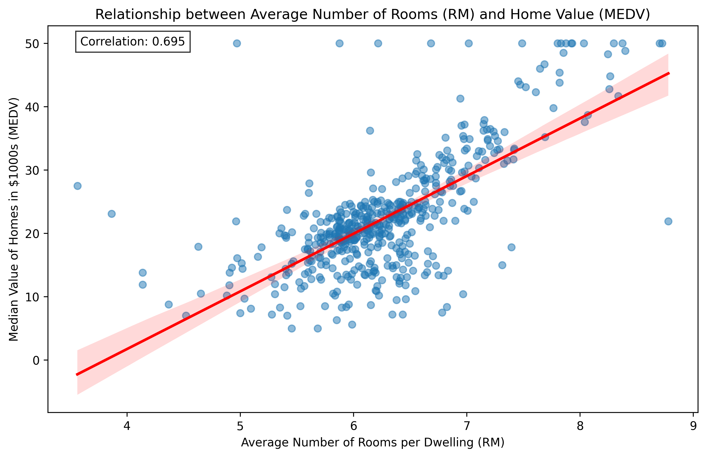

Tutorial 3: Agents
Overview
This tutorial delves into agents in h2oGPTe and the diverse tools they leverage to handle various tasks (prompts). h2oGPTe agents empower you to run code, generate plots, search the web, generate images, handle documents, develop models, and much more. For instance, h2oGPTe agents can:
Analyze datasets and extract meaningful insights
Generate visualizations to illustrate data trends
Build and train machine learning models
Search the web and aggregate information
Generate and execute Python code and Bash scripts
Handle document processing tasks
Generate images
Automate workflows in machine learning, scripting, and data analysis
Objectives
Learn about h2oGPTe agents and the tools they can access to complete diverse and complex tasks.
Prerequisites
Before you begin, make sure you have:
- a global API key
Note
To learn how to create a global API key, see Create an API key.
h2oGPTe v1.6.18
Tools
h2oGPTe agents enhance the functionality and versatility of h2oGPTe to execute a broader range of tasks autonomously. In other words, agents allow the large language model (LLM) to perform actions such as running code, generating plots, searching the web, conducting research, developing and preparing models, and more.
h2oGPTe agents are equipped with a diverse suite of tools and features designed to optimize workflows, enhance productivity, and simplify complex tasks. The tools an agent can access to complete a prompt are as follows:
from h2ogpte import H2OGPTE
client = H2OGPTE(
address="https://h2ogpte.genai.h2o.ai",
api_key='sk-XXXXXXXXXXXXXXXXXXXXXXXXXXXXXXXXXXXXXXXXXXXXXXXX',
)
for value in client.get_agent_tools_dict().values():
print(value)
Advanced Reasoning
Aider Code Generation
Ask Question About Documents
Ask Question About Image
Audio-Video Transcription
Bing Search
Convert Document to Text
Download Web Video
Evaluate Answer
Google Search
H2O Driverless AI Data Science
Image Generation
Internet Access
Intranet Access
Mermaid Chart-Diagram Renderer
Python Coding
RAG Text
RAG Vision
Scholar Papers Search
Screenshot Webpage
Shell Scripting
Wayback Machine Search
Web Image Search
Wikipedia Articles Search
Wolfram Alpha Math Science Search
Note
To learn about each available tool, see Tools.
Use case examples
Let’s explore and discuss the following two use case examples to understand how to enable agents and how its tools work.
Both use cases use the Boston Housing Dataset, a well-known dataset used primarily for practicing regression techniques in machine learning. It contains information about various features of Boston’s housing, which can be used to predict housing prices.
Use case 1: Dataset analysis with h2oGPTe agents
For the following prompt, when agents are disabled, h2oGPTe will respond by providing step-by-step instructions to achieve the desired result rather than performing the task itself:
Prompt: Utilize the Boston Housing Dataset to calculate the correlation between the RM column (representing the average number of rooms per dwelling) and the MEDV column (indicating the median value of owner-occupied homes in thousands of dollars). After determining the correlation, create a scatter plot with RM on the x-axis and MEDV on the y-axis to visually represent their relationship. Enhance the visualization by adding a trend line highlighting the positive correlation between the number of rooms and home values. You can access the dataset here: https://www.kaggle.com/code/prasadperera/the-boston-housing-dataset.
With agents enabled, h2oGPTe can first obtain the dataset by searching the web; right after, it can calculate the correlation using a Python environment and immediately generate a plot (image) showing the relationship between the RM and MEDV columns while adding a trend line to illustrate the positive correlation.
chat_session_id = client.create_chat_session()
with client.connect(chat_session_id) as session:
reply = session.query(
message="Utilize the Boston Housing Dataset to calculate the correlation between the RM column (representing the average number of rooms per dwelling) and the MEDV column (indicating the median value of owner-occupied homes in thousands of dollars). After determining the correlation, create a scatter plot with RM on the x-axis and MEDV on the y-axis to visually represent their relationship. Enhance the visualization by adding a trend line highlighting the positive correlation between the number of rooms and home values. You can access the dataset here: https://www.kaggle.com/code/prasadperera/the-boston-housing-dataset",
llm="auto",
llm_args=dict(use_agent=True)
)
print(reply.content)
The analysis of the Boston Housing Dataset reveals a strong positive correlation between the average number of rooms per dwelling (RM) and median home values (MEDV). Here are the key findings:
1. Correlation Analysis:
- The correlation coefficient between RM and MEDV is 0.695
- This indicates a strong positive relationship: as the number of rooms increases, home values tend to increase
- The relationship is statistically significant with a p-value of 2.487e-74
2. Statistical Significance:
- R-squared value: 0.484
- This means approximately 48.4% of the variance in median home values can be explained by the average number of rooms
- The extremely low p-value confirms the relationship is not due to random chance
Here's the scatter plot showing the relationship between average number of rooms and median home values:

The visualization clearly shows:
- A positive trend (red line) indicating higher home values with more rooms
- Individual data points showing some variance around the trend line
- The correlation coefficient (0.695) displayed in the top-left corner
Insights:
1. The relationship between rooms and home value is substantial but not perfect, suggesting other factors also influence home prices
2. The spread of points around the trend line indicates varying price levels for homes with the same number of rooms
3. The relationship appears to be roughly linear across the range of room counts
Recommendations:
1. For real estate valuation, consider the number of rooms as a significant but not sole predictor of home value
2. When developing pricing models, include RM as an important feature but combine it with other relevant variables
3. Consider investigating other factors that might explain the remaining 51.6% of variance in home values
<turn_title>Boston Housing Room Count and Home Value Correlation Analysis</turn_title>
The response includes the image file name and ID corresponding to one of the files generated by the agent when completing the prompt. To download the image (the plot), use the following method:
client.download_document(destination_directory="./",destination_file_name="boston_housing_correlation.png", document_id="568946db-b398-4603-bdfc-94c387a248bd")

boston_housing_correlation.png
Note
In particular, h2oGPTe agents use the following tool to analyze the Boston Housing Dataset: Python coding.
Use case 2: Model development and preparation with h2oGPTe agents
For the following prompt, when agents are disabled, h2oGPTe will respond by providing step-by-step instructions to achieve the desired result rather than performing the task itself:
Prompt: Develop a regression model using Scikit-Learn to predict housing prices based on the Boston Housing Dataset. Ensure that the model is saved as a .pkl file. Specify the exact name of this file. Additionally, provide a Python code example demonstrating how to load and use the saved model to make predictions with example data. The target variable for the regression should be the MEDV (Median Value) column. You can access the dataset at the following link: https://www.kaggle.com/code/prasadperera/the-boston-housing-dataset.
With agents enabled, h2oGPTe can create the regression model.
chat_session_id = client.create_chat_session()
with client.connect(chat_session_id) as session:
reply = session.query(
message="Develop a regression model using Scikit-Learn to predict housing prices based on the Boston Housing Dataset. Ensure that the model is saved as a .pkl file. Specify the exact name of this file. Additionally, provide a Python code example demonstrating how to load and use the saved model to make predictions with example data. The target variable for the regression should be the MEDV (Median Value) column. You can access the dataset at the following link: https://www.kaggle.com/code/prasadperera/the-boston-housing-dataset.",
llm="auto",
llm_args=dict(use_agent=True)
)
print(reply.content)
I have developed a comprehensive regression model for predicting housing prices using the Boston Housing Dataset. Here's the complete solution:
1. Model Development and Performance:
- Tested multiple algorithms (Linear, Ridge, Lasso, Random Forest)
- Final model: Random Forest Regressor
- Performance metrics:
* R-squared Score: 0.892
* Root Mean Squared Error: 2.813
* Cross-validation R² (mean): 0.826 (±0.095)
2. Feature Importance Analysis:
```
Most influential features:
1. Average rooms (rm): 50.4%
2. Lower status population (lstat): 31.0%
3. Distance to employment (dis): 6.1%
4. Crime rate (crim): 3.8%
```
3. Files Created:
- boston_housing_rf_model.pkl (main model file)
- boston_housing_scaler.pkl (feature scaler)
4. Implementation Details:
```python
# Load and use the model
import pickle
import pandas as pd
from sklearn.preprocessing import StandardScaler
# Load model and scaler
with open('boston_housing_rf_model.pkl', 'rb') as file:
model = pickle.load(file)
with open('boston_housing_scaler.pkl', 'rb') as file:
scaler = pickle.load(file)
# Example prediction
example_data = pd.DataFrame({
'crim': [0.02729],
'zn': [0.0],
'indus': [7.07],
'chas': [0],
'nox': [0.469],
'rm': [6.421],
'age': [78.9],
'dis': [4.9671],
'rad': [2],
'tax': [242],
'ptratio': [17.8],
'b': [396.90],
'lstat': [9.14]
})
# Scale features and predict
scaled_data = scaler.transform(example_data)
prediction = model.predict(scaled_data)
```
Key Insights:
1. Housing price is primarily driven by:
- Number of rooms (50.4% importance)
- Socioeconomic status (31.0% importance)
2. Location factors (distance to employment) have moderate impact (6.1%)
3. Crime rate has relatively low impact (3.8%)
4. Physical characteristics outweigh demographic factors
Recommendations:
1. For Model Users:
- Focus on accurate room count measurements
- Ensure socioeconomic data is current
- Validate input ranges using provided validation function
2. For Real Estate Applications:
- Prioritize property size and room configuration
- Consider proximity to employment centers
- Monitor neighborhood socioeconomic changes
3. For Model Improvement:
- Collect additional features about interior quality
- Update regularly with recent market data
- Consider adding interaction terms between rooms and location
<turn_title>Boston Housing Price Prediction Model with Random Forest Regression</turn_title>
You can run and test the model using the provided Python script example (in the prompt response), which utilizes the boston_housing_rf_model. pk and boston_housing_scaler. pk files (generated by the agent).
agent_files = client.list_chat_message_meta_part(reply.id, "agent_files").content
agent_files = json.loads(agent_files)
def get_key_by_value(file_list, target_value):
for file_dict in file_list:
for key, value in file_dict.items():
if value == target_value:
return key
return None
rf_model_id = get_key_by_value(agent_files, "boston_housing_rf_model.pkl")
scaler_id = get_key_by_value(agent_files, "boston_housing_scaler.pkl")
client.download_document(destination_directory="./",destination_file_name="boston_housing_rf_model.pkl", document_id=rf_model_id)
client.download_document(destination_directory="./",destination_file_name="boston_housing_scaler.pkl", document_id=scaler_id)
Note
In particular, h2oGPTe agents use the following agent tool to build the regression model for the Boston Housing Dataset: Python coding and shell scripting.